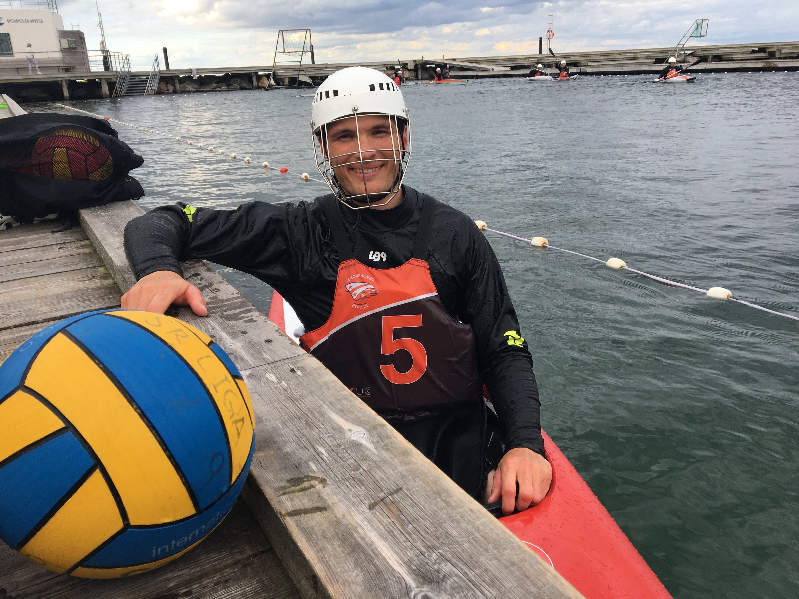
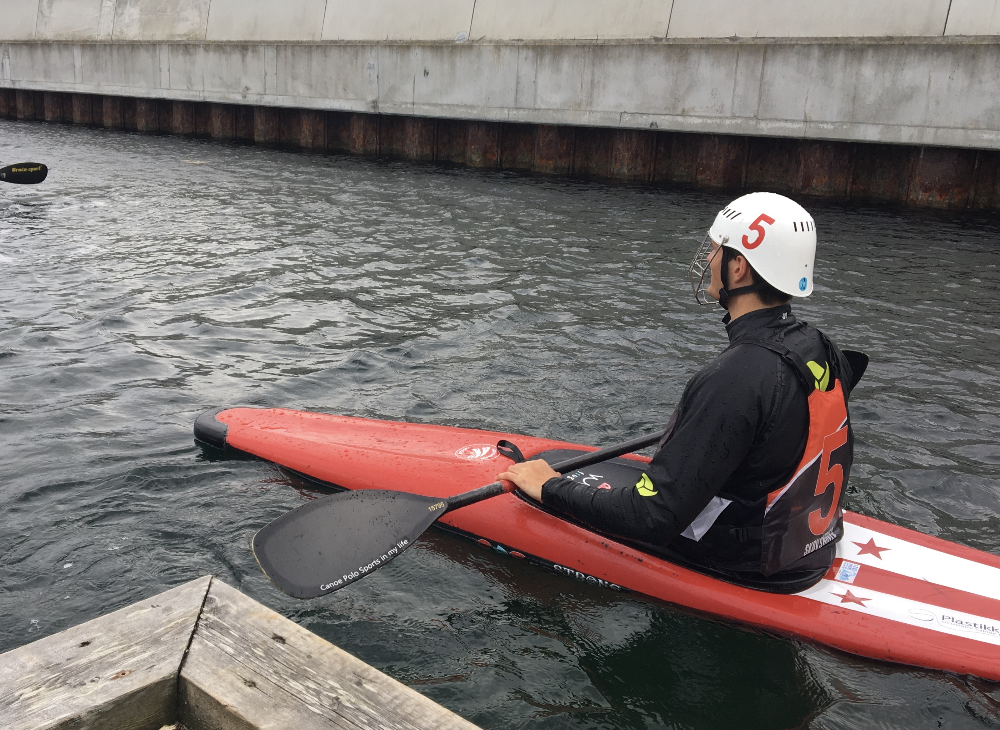
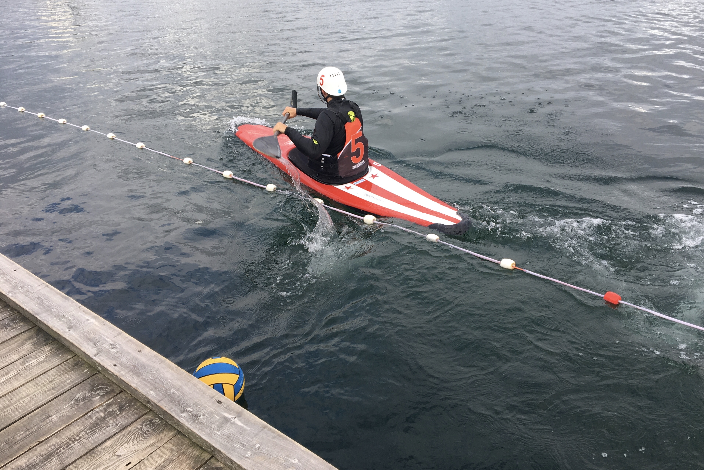

Tema 5
Inden vi gik i gang med at kode vores pilot-site, lavede vi opgaven "pilot-video", hvor vi skulle lave en kort film om en person og hans eller hendes passion. Jeg valgte derfor at filme min kæreste Christoffer Zwinge, som spiller på landsholdet i kajakpolo. Herefter kom opgaven om pilot-sitet, hvor vi skulle kode en lille hjemmeside, hvor vi lærte at indsætte video i to forskellige formater, vha. video-tagget i html, og ved at hente koden ind fra YouTube, hvor vi også lagde videon op. Udover videoen skulle vi også tage nogle still-fotos ude på optagestedet. . Nu har jeg så lært hvordan man får den ind på siden ved at kopiere kode fra YouTube.


